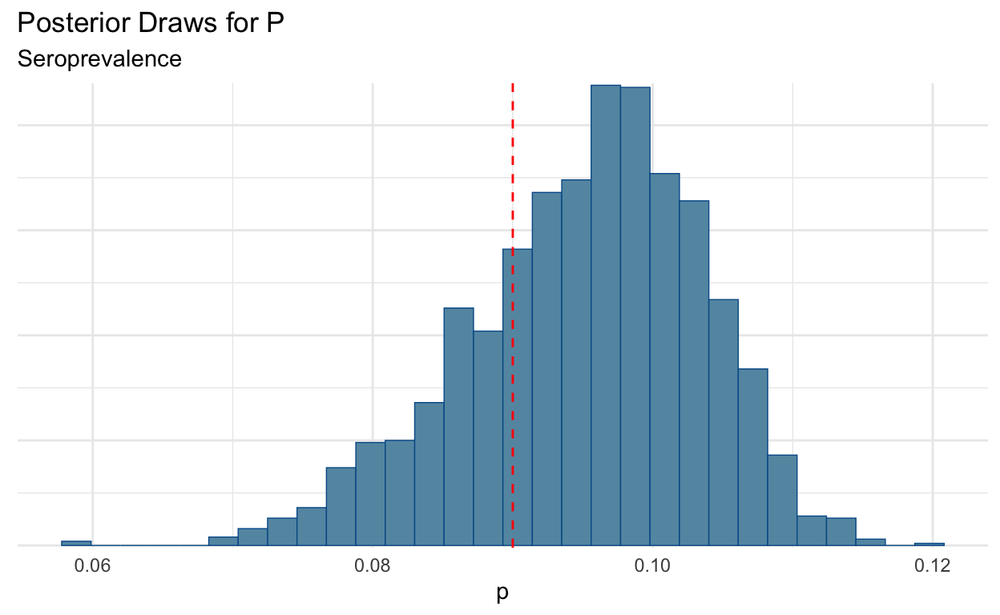
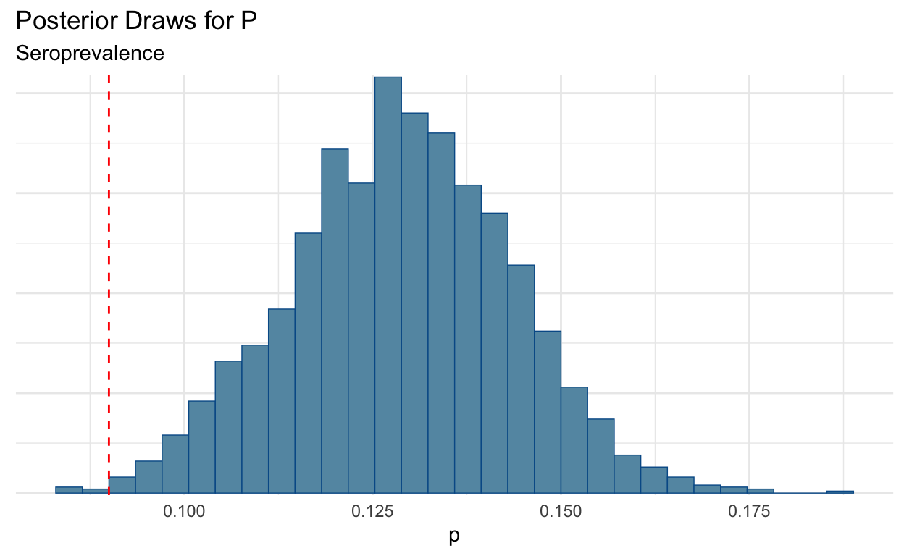
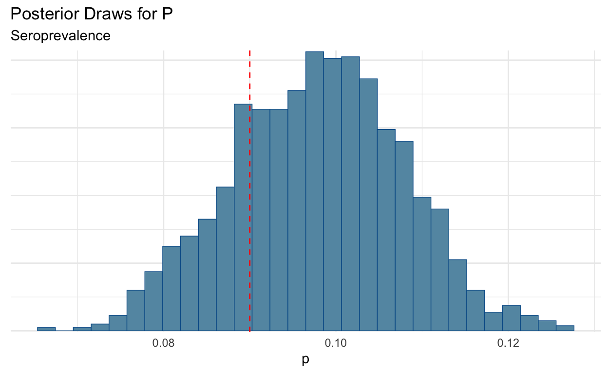
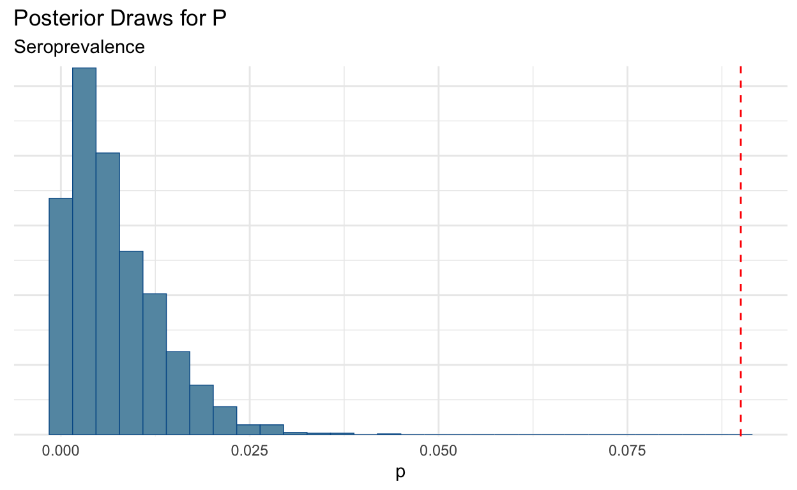

Here I explore the implications of different levels of sensitivity and specificity in a Bayesian framework. All of this work is based on Gelman and Carpenter.
One important concept that is discuss often is the role of sensitivity and specificity in testing. Here we are looking at the ability of a given diagnostic test to correctly identify true positives and correctly identify false positives. If you always forget which one is sensitivity and which one is specifity, no worries, I feel like everyone googles it.
There has been a lot written already about this topic, and I certainly won’t add anymore than has already been written. Regardless, I would like to just do some
library(rstan)
library(cmdstanr)
library(ggplot2)
theme_set(theme_minimal())First, I’ll start with the model from Gelman and Carpenter and make a few tweaks, and then explore the results.
writeLines(readLines("seroprevalence.stan"))
// The input data is a vector 'y' of length 'N'.
data {
int<lower = 0> y_sample;
int<lower = 0> n_sample;
real sensitivity;
real specificity;
real sensitivity_sd;
real specificity_sd;
}
// The parameters accepted by the model. Our model
// accepts two parameters 'mu' and 'sigma'.
parameters {
real<lower=0, upper = 1> p;
real<lower=0, upper = 1> spec;
real<lower=0, upper = 1> sens;
}
// The positivites observed are a function of
// sensitivity and specificity of test then
// drawn from a bininomial distribution
model {
real p_sample = p * sens + (1 - p) * (1 - spec);
y_sample ~ binomial(n_sample, p_sample);
// Use Priors for Sensitivity and Specificity
// Truncated Normal Because That's What is
// Available
spec ~ normal(specificity, specificity_sd);
sens ~ normal(sensitivity, sensitivity_sd);
}I made a slight tweak in that the sensitivity and specificity mean and variance are set by the user rather than estimating them from data. Most of the time we don’t have data like these in the hospital where we swab someone multiple times and know the ground “truth.” This would be the equivalent of reading these testing stats off of the proverbial box.
We can go ahead and compile our model using cmdstan_model. You’ll note that I am using the cmdstanr package rather than rstan for compiling and sampling from Stan. This decision is intentional…mainly because I chronically have issues with upgrading rstan on every platform. cmstand seeks to ameliorate this by being a thin wrapper to the command line version of stan. It’s an easy switch, but there are a few differences.
mod <- cmdstan_model("seroprevalence.stan")Wake Forest University Baptist Medical Center is doing a large study for seroprevalence in North Carolina so that is a good place to start.
They list 19,057 study participants, but this is a multi-part study where not all the persons receive a test kit to test for antibodies. The participants receive a daily questionaire for symptoms and SARS-CoV-2 positive contacts (it doesn’t use that language, just Covid-19 but recall that’s the disease and not the virus). Let’s just assume 25% of the participants receive a test kit. Based on their numbers 9% on average (8-10%) have tested positive. This is somewhat inline with existing seroprevalence studies (Stringhini et al. 2020; Pollán et al. 2020; Havers et al. 2020).
So I looked up the sensitivity and specificity for the antibody test being used in this study (Scanwell) and plugged in those initial values.1
postitives <- 19057*.09*.25
n <- as.integer(19057*.25)
dat_medium_sensi <- list(
y_sample = as.integer(postitives),
n_sample = n,
sensitivity = .863,
specificity = .999,
sensitivity_sd = .01,
specificity_sd= .01
)
fit_medium_sensi <- mod$sample(data = dat_medium_sensi,chains = 2,
iter_warmup = 500, refresh = 0,
iter_sampling = 1000,
adapt_delta = .95)
Running MCMC with 2 sequential chains...
Chain 1 finished in 0.2 seconds.
Chain 2 finished in 0.1 seconds.
Both chains finished successfully.
Mean chain execution time: 0.2 seconds.
Total execution time: 0.4 seconds.So let’s see where this gives us:
knitr::kable(fit_medium_sensi$summary("p")[,c("mean", "q5", "q95")], digits = 3)| mean | q5 | q95 |
|---|---|---|
| 0.095 | 0.08 | 0.108 |
bayesplot::mcmc_hist(fit_medium_sensi$draws("p"))+
labs(
title = "Posterior Draws for P",
subtitle = "Seroprevalence"
)+
geom_vline(xintercept = .09, lty = "dashed", colour = "red")
Which puts us right in the error range that Wake reported. That’s good.
Now let’s test to see what happens if we losen the test. Let’s say that the sensivity is lower…closer to 65% which some reason (could be that many people have below antibody titers below the lower detection threshold. This means that there would be false negative).
dat_low_sensi <- list(
y_sample = as.integer(postitives),
n_sample = n,
sensitivity = .65,
specificity = .999,
sensitivity_sd = .05,
specificity_sd= .01
)
fit_low_sensi <- mod$sample(data = dat_low_sensi,chains = 2,
iter_warmup = 500, refresh = 0,
iter_sampling = 1000,
adapt_delta = .95)
Running MCMC with 2 sequential chains...
Chain 1 finished in 0.1 seconds.
Chain 2 finished in 0.1 seconds.
Both chains finished successfully.
Mean chain execution time: 0.1 seconds.
Total execution time: 0.2 seconds.Now we can look at the results:
knitr::kable(fit_low_sensi$summary("p")[,c("mean", "q5", "q95")], digits = 3)| mean | q5 | q95 |
|---|---|---|
| 0.129 | 0.104 | 0.153 |
Yikes! Here we see that we could be under-estimating prevalence.
bayesplot::mcmc_hist(fit_low_sensi$draws("p"))+
labs(
title = "Posterior Draws for P",
subtitle = "Seroprevalence"
)+
geom_vline(xintercept = .09, lty = "dashed", colour = "red")
Now maybe another scenario, is that the sensitivity is the same as the “box” value, but there is some additional noise from testing error.
dat_medi_low_sensi <- list(
y_sample = as.integer(postitives),
n_sample = n,
sensitivity = .85,
specificity = .999,
sensitivity_sd = .05,
specificity_sd= .01
)
fit_medi_low_sensi <- mod$sample(data = dat_medi_low_sensi,
chains = 2,
iter_warmup = 500, refresh = 0,
iter_sampling = 1000,
adapt_delta = .95)
Running MCMC with 2 sequential chains...
Chain 1 finished in 0.1 seconds.
Chain 2 finished in 0.1 seconds.
Both chains finished successfully.
Mean chain execution time: 0.1 seconds.
Total execution time: 0.2 seconds.
bayesplot::mcmc_hist(fit_medi_low_sensi$draws("p"))+
labs(
title = "Posterior Draws for P",
subtitle = "Seroprevalence"
)+
geom_vline(xintercept = .09, lty = "dashed", colour = "red")
We could still be missing some folks.
Just for completeness, it is worth looking at what happens if specificity degrades. This is generally unlikely in many of these tests (especially the case in PCR tests where if there is viral RNA present, it will grow..e.g. if you have a positive tests you are positive).
dat_low_spec <- list(
y_sample = as.integer(postitives),
n_sample = n,
sensitivity = .85,
specificity = .90,
sensitivity_sd = .05,
specificity_sd= .01
)
fit_low_spec <- mod$sample(data = dat_low_spec,
chains = 2,
iter_warmup = 500, refresh = 0,
iter_sampling = 1000,
adapt_delta = .95)
Running MCMC with 2 sequential chains...
Chain 1 finished in 0.1 seconds.
Chain 2 finished in 0.1 seconds.
Both chains finished successfully.
Mean chain execution time: 0.1 seconds.
Total execution time: 0.2 seconds.
bayesplot::mcmc_hist(fit_low_spec$draws("p"))+
labs(
title = "Posterior Draws for P",
subtitle = "Seroprevalence"
)+
geom_vline(xintercept = .09, lty = "dashed", colour = "red")
Yikes! This shows the importance of having high specificity!!!
Havers, Fiona P., Carrie Reed, Travis Lim, Joel M. Montgomery, John D. Klena, Aron J. Hall, Alicia M. Fry, et al. 2020. “Seroprevalence of Antibodies to SARS-CoV-2 in 10 Sites in the United States, March 23-May 12, 2020.” JAMA Internal Medicine, July. https://doi.org/10.1001/jamainternmed.2020.4130.
Pollán, Marina, Beatriz Pérez-Gómez, Roberto Pastor-Barriuso, Jesús Oteo, Miguel A. Hernán, Mayte Pérez-Olmeda, Jose L. Sanmartín, et al. 2020. “Prevalence of SARS-CoV-2 in Spain (ENE-COVID): A Nationwide, Population-Based Seroepidemiological Study.” The Lancet 0 (0). https://doi.org/10.1016/S0140-6736(20)31483-5.
Stringhini, Silvia, Ania Wisniak, Giovanni Piumatti, Andrew S Azman, Stephen A Lauer, Helene Baysson, David De Ridder, et al. 2020. “Repeated Seroprevalence of Anti-SARS-CoV-2 IgG Antibodies in a Population-Based Sample from Geneva, Switzerland.” Preprint. Infectious Diseases (except HIV/AIDS). https://doi.org/10.1101/2020.05.02.20088898.
Note that there was another study that found in a clinical setting the results were worse, but that’s why we have simulations.↩
Text and figures are licensed under Creative Commons Attribution CC BY 4.0. The figures that have been reused from other sources don't fall under this license and can be recognized by a note in their caption: "Figure from ...".
For attribution, please cite this work as
DeWitt (2020, Aug. 9). Michael DeWitt: Sensitivity and Specificity. Retrieved from https://michaeldewittjr.com/dewitt_blog/posts/2020-08-09-sensitivity-and-specificity/
BibTeX citation
@misc{dewitt2020sensitivity,
author = {DeWitt, Michael},
title = {Michael DeWitt: Sensitivity and Specificity},
url = {https://michaeldewittjr.com/dewitt_blog/posts/2020-08-09-sensitivity-and-specificity/},
year = {2020}
}